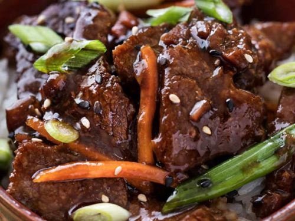
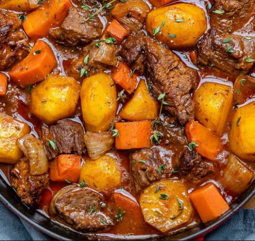
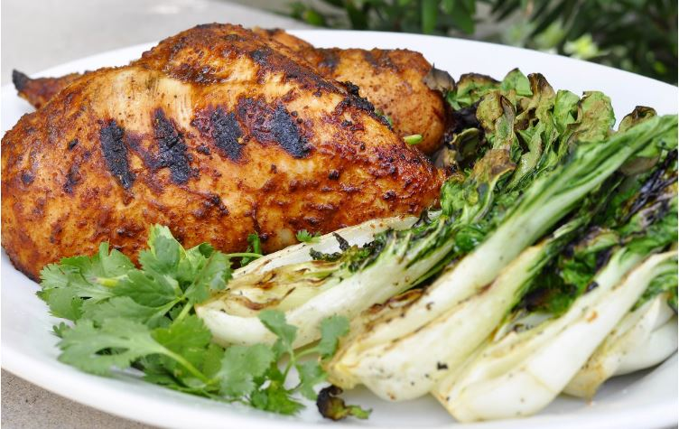
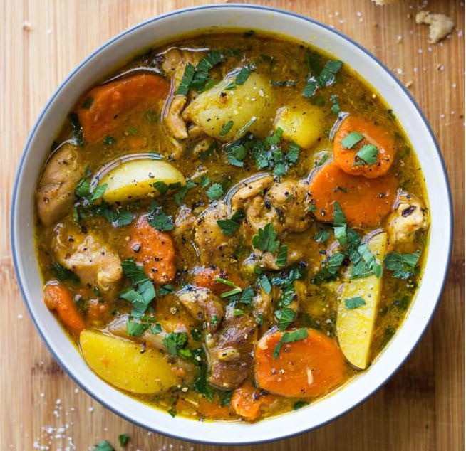
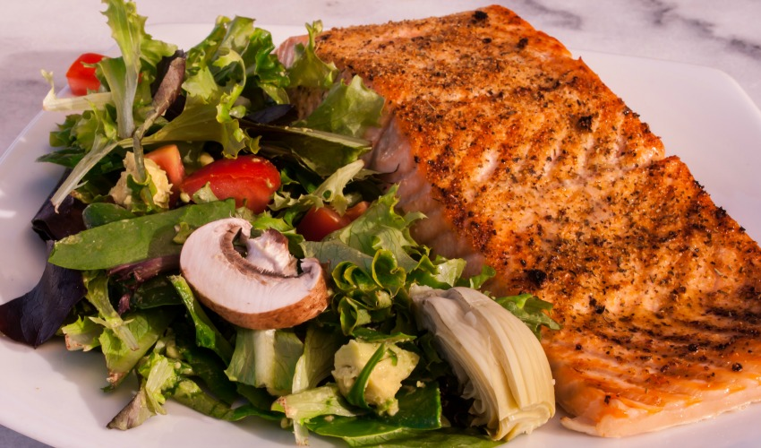
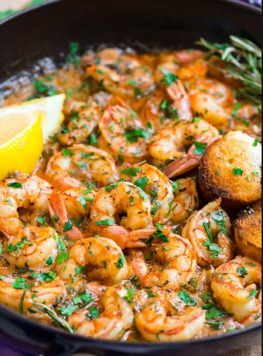

Mongolian Beef

- PREP TIME 20 minutes
- COOK TIME 20 minutes
- SERVINGS 4 servings
- SOURCE @spendwithpennies.com
- CUISINE Chinese
Ingredients:
- 2 teaspoons + 2 tablespoons cooking oil
- 1/2 teaspoon minced ginger
- 4 cloves garlic, minced
- 1/2 cup soy sauce
- 1/4 cup water
- 1/2 cup packed brown sugar
- 1 lb flank steak (or your favorite cut of beef thinly sliced)
- 1/3 cup cornstarch
- 2 green onions , sliced
Instructions:
- Heat oil in a small pan over medium low.Add ginger and garlic and stir just until fragrant (about 1 minute). Add soy sauce, water and brown sugar and bring to a boil. Let boil 3-5 minutes or until slightly thickened. Set aside.
- Slice the flank steak into 1/4" slices and toss with cornstarch. Gently shake off any excess.
- Place 1 tablespoon at a time of oil in a pan or wok and heat over medium high heat. Cook the beef in small batches for about 2 minutes. (It doesn't need to cook all of the way through,it will cook completely when combined with the sauce).
- Once all the beef has been cooked, combine with the sauce and heat over medium until hot and bubbly. Remove from heat and stir in green onions. Serve over rice.
Beef stew

- TIME 2 hours 30 minutes
- SERVINGS 4 servings
- SOURCE Cookingnytimes
- CUISINE American
Ingredients:
- ¼ cup all-purpose flour
- ¼ teaspoon freshly ground pepper
- 1 pound beef stewing meat, trimmed and cut into inch cubes
- 5 teaspoons vegetable oil
- 1 cup red wine
- 3 ½ cups beef broth, homemade or low-sodium canned
- 2 bay leaves
- 1 medium onion, peeled and chopped
- 5 medium carrots, peeled and cut into 1/4-inch rounds
- large baking potatoes, peeled and cut into 3/4-inch cubes
- 2 teaspoons salt
Instructions:
- Combine the flour and pepper in a bowl, add the beef and toss to coat well. Heat 3 teaspoons of the oil in a large pot. Add the beef a few pieces at a time; do not overcrowd. Cook, turning the pieces until beef is browned on all sides, about 5 minutes per batch; add more oil as needed between batches.
- Remove the beef from the pot and add the vinegar and wine. Cook over medium-high heat, scraping the pan with a wooden spoon to loosen any browned bits. Add the beef, beef broth and bay leaves. Bring to a boil, then reduce to a slow simmer.
- Cover and cook, skimming broth from time to time, until the beef is tender, about 1 1/2 hours. Add the onions and carrots and simmer, covered, for 10 minutes. Add the potatoes and simmer until vegetables are tender, about 30 minutes more. Add broth or water if the stew is dry. Season with salt and pepper to taste. Ladle among 4 bowls and serve.
Oven bake chicken

- TIME 30 minutes
- SERVINGS 4 servings
- SOURCE @recipetineats.com
- CUISINE Western
Ingredients:
- 4 chicken breasts
- 2 tsp olive oil
- 1 1/2 tbsp brown sugar
- 1 tsp paprika
- 1 tsp dried oregano or thyme
- 1/4 tsp garlic powder
- 1/2 tsp each salt and pepper
Instructions:
- Preheat oven to 425°F/220°C
- Pound chicken at the thickest part - using a rolling pin, meat mallet or even your fist (key tip for even cooking + tender chicken).
- Mix Seasoning.
- Line tray with foil and baking / parchment paper. Place chicken upside down on tray. Drizzle chicken with about 1 tsp oil. Rub over with fingers. Sprinkle with Seasoning
- Flip chicken. Drizzle with 1 tsp oil, rub with fingers, sprinkle with Seasoning, covering as much of the surface area as you can.
- Bake 18 minutes, or until surface is golden or internal temperature is 165°F/75°C using a meat thermometer.
- Remove from oven and immediately transfer chicken to serving plates.
Chicken stew

- PREP TIME 15 minutes
- COOK TIME 1 hour
- SERVINGS 4-6 servings
- SOURCE @littlebroken.com
- CUISINE American
Ingredients:
- 1 1/2 lbs. chicken thighs, boneless, skinless, cut into 2-inch chunks
- 1 Tbsp. canola oil or avocado oil
- 3 medium carrots, sliced diagonally into 1/2-inch pieces
- 1 medium sweet onion, cut into 12 wedges
- 6 garlic cloves, chopped
- 5 cups chicken stock, divided
- 2 Tbsp. all-purpose flour
- 1 dried bay leaf
- 12 oz. baby white potatoes, quartered
- 1/4 cup fresh chopped parsley
- Salt and ground black pepper
Instructions:
- Season the chicken with salt and pepper, to taste.
- Heat oil in a dutch oven over high heat. Add chicken and cook, stirring occasionally, until brown on all sides, about 6 minutes total. Transfer to a plate.
- Add carrots and onions to the dutch oven and cook, stirring often, until onions begin to soften, about 4-5 minutes. Add garlic and cook for about 30 seconds, stirring nonstop. Add 1/2 cup chicken stock while stirring and scraping to loosen browned bits from the bottom of the dutch oven.
- In a small bowl, whisk together flour and 1/2 cup broth; add to the dutch oven. Stir in chicken and remaining 4 cups of chicken broth. Add bay leaf and season with salt and pepper, to taste. Bring to a boil, reduce heat to medium-low and simmer 25 minutes, partially covered.
- Add potatoes and cook uncovered until potatoes are tender, about 18-20 minutes. The liquid will slightly reduce even further. Stir in parsley and discard bay leaf before serving.
Blackened salmon

- PREP TIME 10 minutes
- COOK TIME 10 minutes
- SERVINGS 4 servings
- SOURCE @wellplated.com
- CUISINE American
Ingredients:
- 4 6-ounce salmon fillet portions
- 1 tablespoon paprika
- 1 teaspoon light or dark brown sugar
- 1 teaspoon salt
- 3/4 teaspoon onion powder
- 3/4 teaspoon garlic powder
- ½ teaspoon cayenne pepper
- 1/2 teaspoon dried oregano
- ½ teaspoon dried thyme
- 2 tablespoons unsalted butter
- 1 lemon cut into wedges
- Chopped fresh parsley or thyme for serving
Instructions:
- Place the salmon on a large plate, flesh-side up, and pat dry.
- In a small bowl, stir together the paprika, brown sugar, salt, onion powder, garlic powder, cayenne, thyme and oregano.
- In a separate small bowl, melt the butter. Brush the butter over the flesh-side of the salmon fillets, then sprinkle the flesh sides evenly with the spice mixture. Lightly pat the spices to adhere as needed.
- Heat a large cast iron skillet or similar heavy-bottomed pan over medium heat (no need to add oil). Turn on the exhaust fan and open a window if things start to get smoky. Once the pan is completely hot (a droplet of water should dance on its surface), working quickly but gently, add the salmon fillets, one at a time, flesh-side down. Cook for 2 to 3 minutes without disturbing the fillets, until the surface is blackened (peek as little as possible so that the salmon gets a nice dark color), then carefully turn each piece of salmon over.
- Continue cooking over medium heat, until the skin becomes crispy, and the fish is fully cooked through, about 5 to 6 additional minutes depending upon the thickness of your fillets. The fish should reach 145 degrees F on an instant read thermometer and flake easily with a fork at its thickest part.
- Squeeze lemon over the salmon, then transfer the fillets to serving plates. Serve immediately with a sprinkle of fresh thyme and additional lemon wedges.
<
Garlic butter shrimp

- PREP TIME 10 minutes
- COOK TIME 10 minutes
- SERVINGS 4 servings
- SOURCE @damndelicious.com
- CUISINE American
Ingredients:
- 8 tablespoons (1 stick) unsalted butter, divided
- 1 1/2 pounds medium shrimp, peeled and deveined
- Kosher salt and freshly ground black pepper, to taste
- 5 cloves garlic, minced
- 1/4 cup chicken stock
- Juice of 1 lemon, or more, to taste
- 2 tablespoons chopped fresh parsley leaves
Instructions:
- Melt 2 tablespoons butter in a large skillet over medium high heat. Add shrimp, salt and pepper, to taste. Cook, stirring occasionally, until pink, about 2-3 minutes; set aside.
- Add garlic to the skillet, and cook, stirring frequently, until fragrant, about 1 minute. Stir in chicken stock and lemon juice. Bring to a boil; reduce heat and simmer until reduced by half, about 1-2 minutes. Stir in remaining 6 tablespoons butter, 1 tablespoon at a time, until melted and smooth.
- Stir in shrimp and gently toss to combine.
- Serve immediately, garnished with parsley leaves, if desired.
Lo mein noodles

- PREP TIME 10 minutes
- COOK TIME 15 minutes
- SERVINGS 4 servings
- SOURCE @pinchofyum
- CUISINE Chinese
Ingredients for sauce:
- 2 tablespoons dark soy sauce (sub regular soy sauce if needed)
- 1 tablespoon light soy sauce (sub regular soy sauce if needed)
- 1 teaspoon sesame oil
- 1 teaspoon sugar
Lo Mein:
- 4–6 ounces uncooked ramen noodles or thin spaghetti or any noodles you desired/li>
- 1 tablespoon sesame oil
- 3 green onions, chopped
- 2–3 cups julienne cut or chopped vegetables like carrots, red peppers, cabbage, bok choy, mushrooms, or broccoli
- 1–2 tablespoons mirin
Instructions:
- Sauce: Shake all the sauce ingredients together in a jar.
- Noodles: Cook the noodles according to package directions. Drain and set aside.
- Heat the sesame oil in a large wok or skillet. Add the green onions (white parts) and vegetables to the hot pan.Stir fry until fork-tender, about 5 minutes.
- Add the mirin to loosen the browned bits up off the bottom of the pan. Add the cooked noodles and about half of the sauce – toss around in the hot pan to combine.
- Add more sauce if needed. Serve topped with remaining green onions!